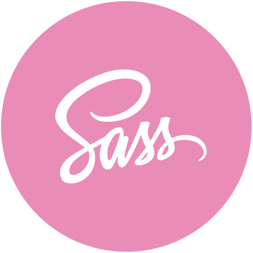

O mnie
Cześć! Jestem Karolina i mieszkam w Krakowie. Przygodę z Front-Endem zaczęłam pod koniec 2017 roku i od tamtej pory rozwijam swoje umiejętności w tej dziedzinie - w tym momencie głównie z Angulara i JavaScript.
Prywatnie lubię góry, planszówki, malowanie obrazów i czytanie książek i żałuję, że doba ma tylko 24 godziny.
Zapraszam do kontaktu.
Doświadczenie
Front-End Web Developer - Profitroom
11.2020 - 02.2022-
Tworzenie responsywnych stron internetowych w CMS na podstawie projektów Pixel Perfect
-
Tworzenie funkcjonalności przy wykorzystaniu JavaScript i jQuery
-
Dodawanie efektów i animacji przy wykorzystaniu bibliotek
-
Współpraca z zespołem grafików i developerów
-
Przykłady stworzonych stron:
Villa Verde, Dosłońce Spa, Trzy Wyspy.
Front-End Developer - Salesmanago
08.2019 - 10.2020-
Tworzenie widoków w AngularJS - dashboardy Integracja z GoogleAds i Adform oraz Deep Behavioural Profiling w aplikacji Salesmanago
-
Bieżące prace związane z utrzymywaniem kodu i poprawą błędów w aplikacji Salesmanago
-
Praca w zespole, code review
-
Tworzenie responsywnych landing pages, formularzy, popupów, sidebarów, ramek rekomendacji, mailingów - HTML, CSS, JS
-
Tworzenie projektów maili, popupów, formularzy w programie Photoshop
Front-End Developer Internship - Virtua
02.2019 - 05.2019-
Stworzenie responsywnego landing page z wykorzystaniem HTML, Sass, JavaScript oraz task managera Gulp.
-
Stworzenie theme dla sklepu internetowego w oparciu o platformę ecommerce - Shopware, wykorzystując Sass, jQuery oraz Gulp.
Projekty
Shop
Angular, TypescriptProjekt sklepu napisany w Angular 14. W widoku kategorii - sortowanie, filtrowanie, search, paginacja.
Project Auth
Angular, TypescriptProjekt wykorzystujący autentykację, autoryzację, refresh, guardy.
Pricing plan
HTML,ES6, Object ProgrammingProjekt wykorzystujący programowanie obiektowe. Stworzony z myślą o łatwiości edycji - aby dodać nową kartę wystarczy skopiować element 'li' w html-u.
Landing Page - Hotel Webpage
HTML, Sass, JS, GulpProjekt responsywnej landing page z wykorzystaniem HTML, Sass, JavaScript oraz task managera Gulp.
Landing Page - Lambda Restaurant
HTML, Sass, JS, GulpProjekt strony z wykorzystaniem HTML, Sass, JavaScript oraz task managera Gulp wykonanej w ramach projektu Rolling Scopes School organizowanej przez Epam.
Landing Page
HTML, Sass, JS, GulpProjekt responsywnej landing page z wykorzystaniem HTML, Sass, JavaScript oraz task managera Gulp. W projekcie wykonałam dwupoziomowe menu, stylowanie elementów odtwarzacza mp3 oraz dodałam karuzelę wykorzystując bibliotekę slick. Wykonałam również podstawową walidację formularza oraz zapisywanie maili do bazy danych Firebase.
Theme - Shopware
HTML, Sass, JS, Gulp, ShopwareTheme dla sklepu internetowego z wykorzystaniem platformy ecommerce - Shopware, wykorzystując Sass, jQuery oraz Gulp. Oprócz nadania styli dla strony głównej oraz strony kategorii utworzyłam plugin ze spersonalizowanym elementem „shopping-world”. W projekcie zachowane było podejście RWD.
Smoothie webpage
HTML, Sass, JS, GulpProjekt responsywnej strony z wykorzystaniem HTML, Sass, JavaScript oraz task managera Gulp. Wykorzystana była również biblioteka Slick do wykonania karuzeli. Samodzielnie zaprojektowałam wygląd strony, wykonałam podstawową walidację formularza oraz zapisywanie maili do bazy danych Firebase.
Kanban board
HTML, CSS, jQueryProjekt tablicy z kolumnami, które zawierają karteczki. Karteczki można przenosić pomiędzy kolumnami, edytować, zmieniać im kolor. Projekt napisany z wykorzystaniem składni jQuery i programowania obiektowego.
Rock, paper, scissors
HTML, Bootstrap, JavaScriptGra napisana w języku JavaScript. Do wystylowania gry użyty był głównie Bootstrap. Aplikacja pozwala zagrać w popularną grę razem z Komputerem.
Random quote machine
HTML, CSS, jQuery, API, ajaxAplikacja losująca cytaty pobierane z zewnętrznego API. Cytaty można udostępnić na twitterze - wybrano tylko te, które mają do 140 znaków.
Country Search Engine
HTML, CSS, jQuery, API, ajaxWyszukiwarka krajów napisana w jQuery. Informacje o krajach są pobierane z zewnętrznego API.
To do list - React
HTML, CSS, ReactProjekt listy zadań wykonanej w React. Oprócz dodawania zadań, można je usuwać i odznaczać. Poza tym zadania są liczone. Projekt wykonany przy użyciu create-react-app.
Stopwatch
HTML, CSS, JS(ES6)Projekt stopera napisany z wykorzystaniem składni ES6. Stoper posiada funkcje, które go uruchamiają, zatrzymują, resetują, a także dodają czas do listy i czyszczą tą listę.
Technologie
Języki
-

-

-

-

W mojej pracy dotychczas najczęściej używałam HTMLa, CSSa i JavaScriptu więc w tych technologiach czuję się najlepiej. Używałam również preprocessora Sass oraz metodologii BEM.
Frameworki i biblioteki
W mojej poprzedniej pracy używałam AngularJS. Uczestniczyłam również w kilkudniowych warsztatach z podstaw Angulara w wersji 6 i chcę poszerzać swoją wiedzę w tym zakresie. W tym momencie skupiam się na poznaniu Angulara 14.
Technologie i programy
W swojej pracy miałam też okazję tworzyć koncepcje w Photoshopie. Dodatkowo używałam Gulpa i tworzyłam theme dla projektu w Shopware (platforma ecommerce). W pracy używam Jiry i pracuję w zespole wykorzystując Gita i Bitbucket.